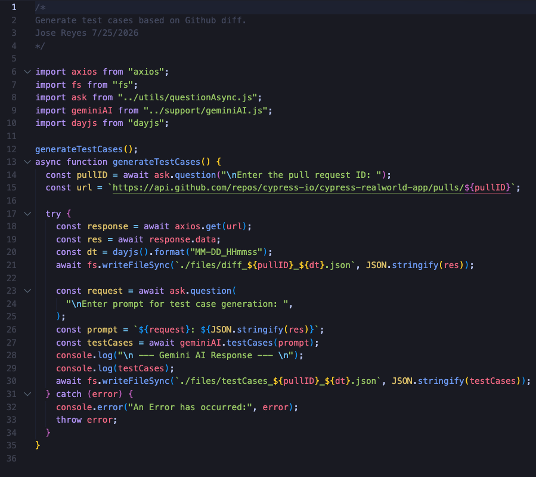
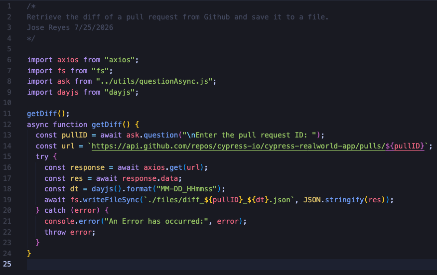

Picture this - A ticket has been marked as Ready for testing on the sprint board, and as a Quality Engineer,
you open the corresponding merge request to gain a better understanding of the changes before you begin testing.
The merge request contains many modifications, but your focus is on validating only the changes introduced for this
specific ticket, not to mention you have a number of other tickets that require your attention as well.
This calls for us to work smarter, not harder. By retrieving the diff between the merge request and the main branch,
we can provide that context to a large language model (LLM) and prompt it to generate detailed, targeted test cases
with expected results based solely on the changes included in the merge request.
This is my thought process for generating test cases using an LLM of choice and the Git diff of a merge request.

An End-to-End Example
For demonstration purposes, I chose a random (public) project in Github that has merge requests with numerous changes. Since this is a public project, there is no need for authentication to retrieve the diff of a merge request. However, if I were working with a private repository, I would need to obtain an API key with the proper scopes to authenticate when making API requests to the Github API.Since I have previously used GeminiAI to resolve flaky locators in Playwright, I decided to leverage it for this example. Below is a script (JavaScript) that retrieves the diff of a merge request from Github and prompts GeminiAI to generate test cases based on the changes in the diff.

Executing the script prompts for the PullID of the merge request and a prompt. The test cases are then displayed in the terminal.
Viewing Test Cases in the terminal is... ehhh
Why suffer if we dont have to, right?Technically all we need is the diff from Github, which we could then upload to the Gemini UI Interface. This will provide a much better experience for reviewing the generated test cases.
Let's modify the script to simply retreive the diff from Github and save it to a local file, which we can then upload to the Gemini UI Interface.

Once executed, the script will save the diff response locally. Now we can drag/drop the file into the Gemini UI Interface and generate test cases based on the diff.

The Vetting Process
While the process of generating test cases is now quick and easy, its important to vet the quality and relevance of the generated test cases.Ask yourself the following:
- Do the test cases align with the acceptance criteria noted in the ticket?
- What value (if any) are provided in the generated collection?
- Are there scenarios that should be tested - that are not included in the generated collection?
Conclusion
In conclusion, leveraging the Github API and an LLM such as Gemini to generate test cases based on the diff of a merge request can significantly improve the efficiency and effectiveness of the testing process. This also makes it easy to copy/paste the test cases into the comments sectionof the ticket you are testing.Thinking long term, you can also prompt the LM to save the test cases in a specific format, such as JSON, which can then be used to automate the creation of test cases in a test management tool. The possibilities are endless, and the key is to experiment and find what works best for your specific use case. Back to all posts